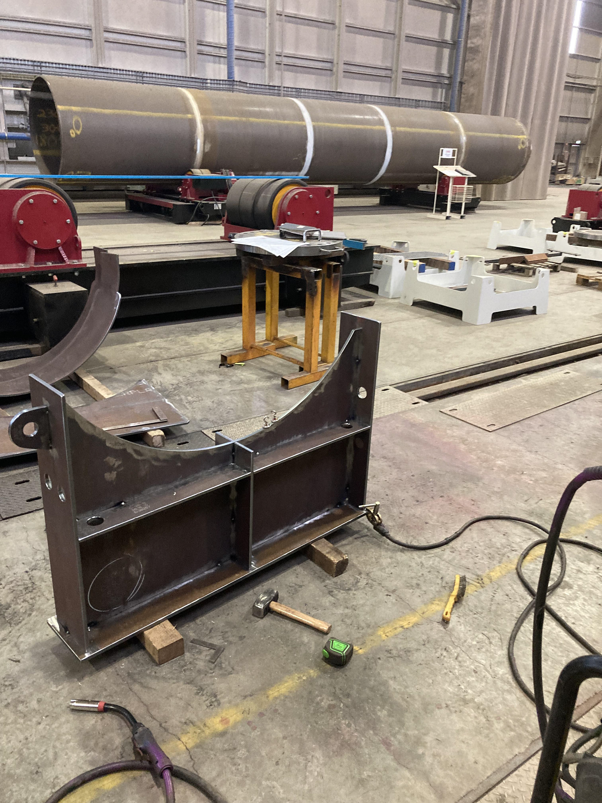
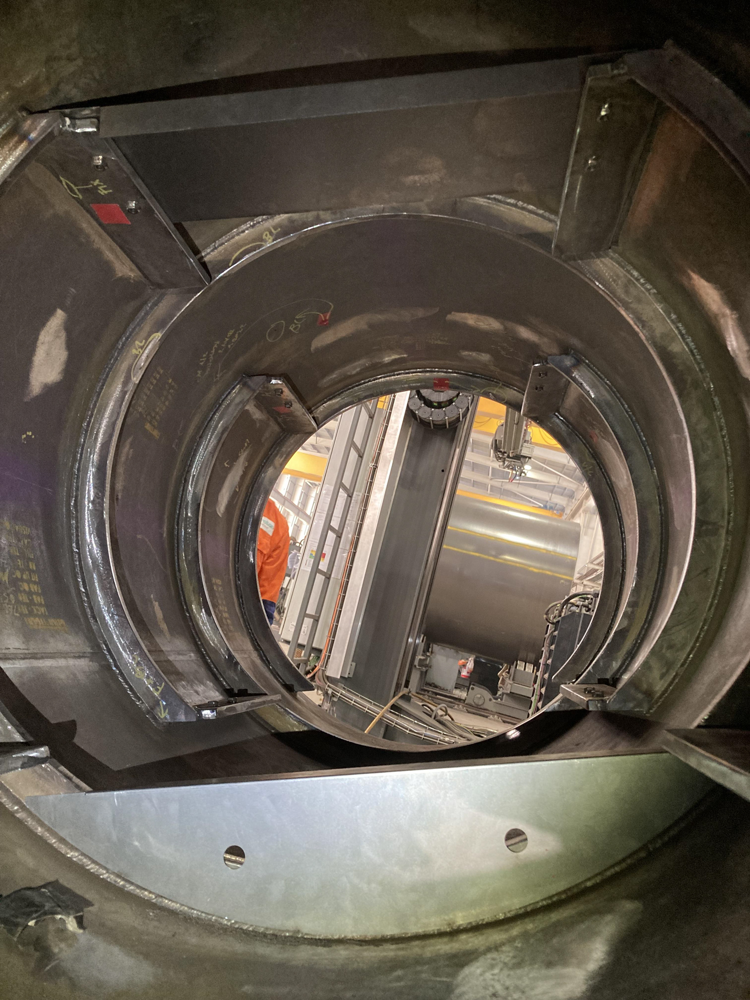
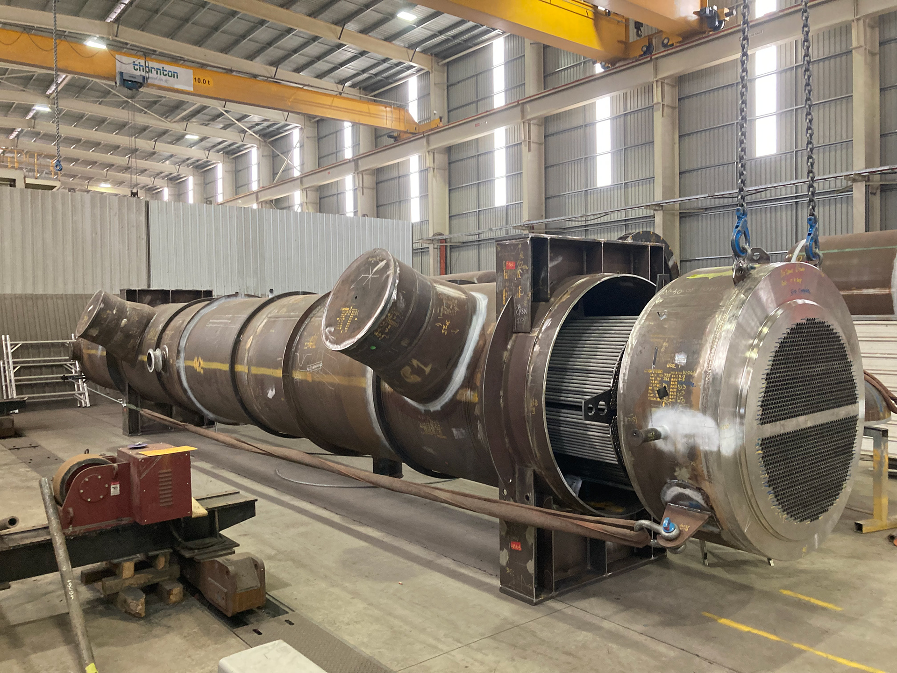
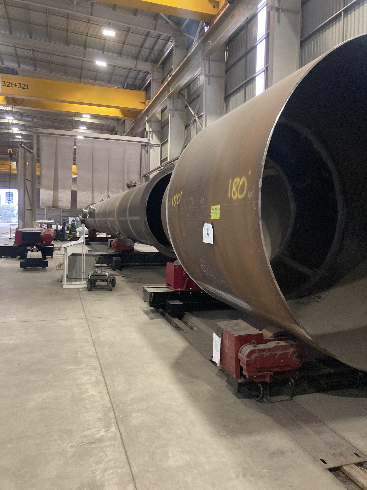

Pressure Vessel Fabrication





Overview
Before starting university, I spent time working on the fabrication floor at Thornton Engineering, one of Australia's leading heavy fabricators supplying pressure vessels and heat exchangers to clients including BP, ExxonMobil, Santos, and BHP. The work was hands-on and demanding, allowing me to develop an instinct for how things are actually built, not just how they look on a drawing.
What the Work Involved
- Reading and interpreting technical fabrication drawings to understand component geometry, weld requirements, and assembly sequences
- Preparing and fitting structural components for assembly, including saddles, shell sections, and nozzle flanges
- Tacking components together using MIG, STICK, and TIG welding processes
- Problem-solving assembly sequencing for components too large and heavy to reposition by hand — requiring careful planning of lift points, rotator positioning, and fit-up order
- Representing the workshop during a client walkthrough, explaining vessel construction progress and how internal structures would fit within the shell
What I Took From It
Working alongside experienced boilermakers on vessels destined for energy and resources facilities gave me an early appreciation for the gap between engineering design and physical reality. Tolerances that look generous on paper become challenging at scale. Weld sequences matter. The order you assemble things in can make or break a job. This perspective allows me to visualise how something will actually be made and not just whether the numbers work, which shapes how I approach engineering problems at university.